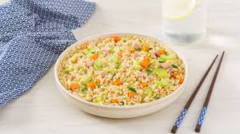

Rice

Description
Rice is a versatile and staple grain enjoyed by cultures worldwide,
serving as a foundation for countless dishes. It comes in various types,
including long-grain, short-grain, basmati, jasmine, and arborio, each
offering a unique texture and flavor. White rice is polished for a smooth,
mild taste, while brown rice retains its bran layer, providing a nutty
flavor and higher nutritional value. Its neutral flavor makes it the
perfect accompaniment to a variety of dishes, from savory curries and
stir-fries to sweet puddings and desserts.
Cooking rice is simple yet customizable, with methods like boiling,
steaming, or using a rice cooker to achieve the desired
consistency—whether light and fluffy or rich and creamy. Its adaptability
allows it to take center stage in dishes like risotto, biryani, or fried
rice while complementing proteins and vegetables as a side. Rich in
carbohydrates and naturally gluten-free, rice is a nourishing and
satisfying ingredient that continues to be a culinary cornerstone across
the globe.
Ingredients
- Rice
- Water
- Salt
- Butter or oil
- Aromatics
- Herbs and spices
Steps
- Place the rice in a fine-mesh strainer or a bowl.
-
Rinse under cold running water until the water runs clear. This removes
excess starch and prevents clumping.
-
In a medium saucepan, combine the rinsed rice, water, and salt (if
using).
- Add butter or oil for extra flavor, if desired.
- Place the saucepan on the stovetop over medium-high heat.
-
Bring the water to a boil, stirring occasionally to prevent the rice
from sticking to the bottom.
- Once the water boils, reduce the heat to low.
- Cover the pot with a tight-fitting lid and let it simmer gently.
- White rice: Cook for 15-18 minutes.
- Brown rice: Cook for 40-45 minutes.
- After the cooking time, remove the pot from the heat.
-
Keep the lid on and let the rice rest for 5-10 minutes. This allows the
rice to finish steaming and absorb any remaining liquid.
-
Remove the lid and fluff the rice with a fork to separate the grains.
- Serve hot as a side dish or base for your favorite recipe.